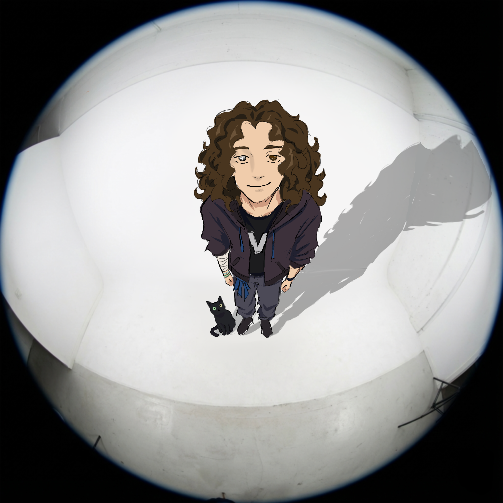

Build
Web projects, experiments, and interfaces shaped around atmosphere and interaction.
Start Here
Developer and UTAU producer creating interactive work, original voicebanks, and expressive digital projects.
Chapter One
I build projects across web, code, and voice synthesis.
My work blends development, design, and sound to create experiences with personality.
Quick Bio Template
Hi, I'm [name]. I'm a [role] who makes [kind of work]. I focus on [strength/style], and I like building things that feel [mood].
Web projects, experiments, and interfaces shaped around atmosphere and interaction.
UTAU voicebanks designed for range, character, and multilingual performance.
Projects built with a strong sense of identity, mood, and visual direction.
Chapter Two
A clear, flexible vocal built for multiple genres, with Japanese, English, and Spanish support plus expressive banks for different styles.

Chapter Three
A music-focused project exploring timing, interaction, and audio-driven design.
View Repo ↗A retro desktop environment simulator built in C with Raylib.
View Repo ↗More experiments, tools, and creative builds will be added here over time.
Get in Touch ↗Final Stop
If you'd like to collaborate, ask a question, or follow my work, you can reach me here.